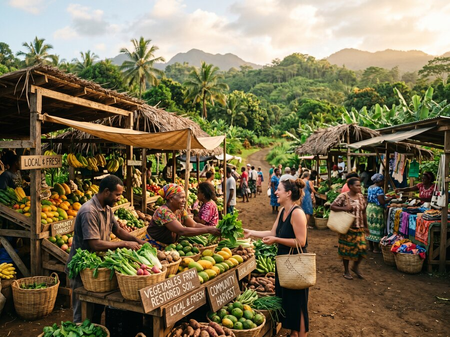

Our Expertise
Circular Economic Development
The Principle
Economics as a Tool for Ecological Permanence
Ecological restoration fails when communities have no economic reason to protect what has been restored. The history of conservation is littered with projects that achieved short-term gains, then watched communities revert to destructive land use because no viable alternative existed.
GEP's circular economic development framework treats local economic infrastructure as inseparable from ecological design. Food systems, supply chains, employment pathways, and revenue streams are planned as extensions of the landscape — not imposed on top of it.
The result is a restoration project that pays for itself over time, generates livelihoods, and gives communities a durable economic stake in the health of the land they steward.

What We Build
Economic Infrastructure Tied to the Land
Food Systems
Integrated food production — agro-forests, food forests, and regenerative farms — embedded within restored landscapes to provide nutrition security and local market supply chains.
Local Employment
Every project creates durable employment across planting, monitoring, maintenance, data collection, and community enterprise — designed to develop skills and retain talent in rural regions.
Carbon & Biodiversity Revenue
Verified carbon and biodiversity credits generate long-term revenue that can be shared with host governments and communities — creating financial incentives aligned with ecological performance.
Ecotourism
Restored landscapes can be designed to accommodate responsible ecotourism — generating foreign exchange, local income, and international visibility for conservation outcomes.
Supply Chain Development
Non-timber forest products, medicinal plants, and sustainably harvested materials create supply chains that reward forest conservation and provide ongoing community income.
Women's Economic Inclusion
GEP actively designs economic frameworks that include women's enterprise, cooperative structures, and financial access — recognising that community resilience depends on gender-inclusive economic participation.